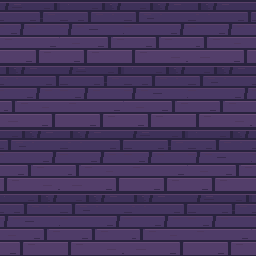
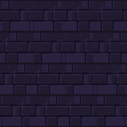
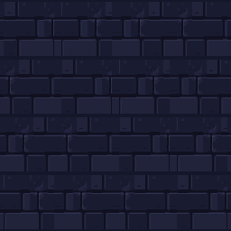
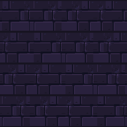
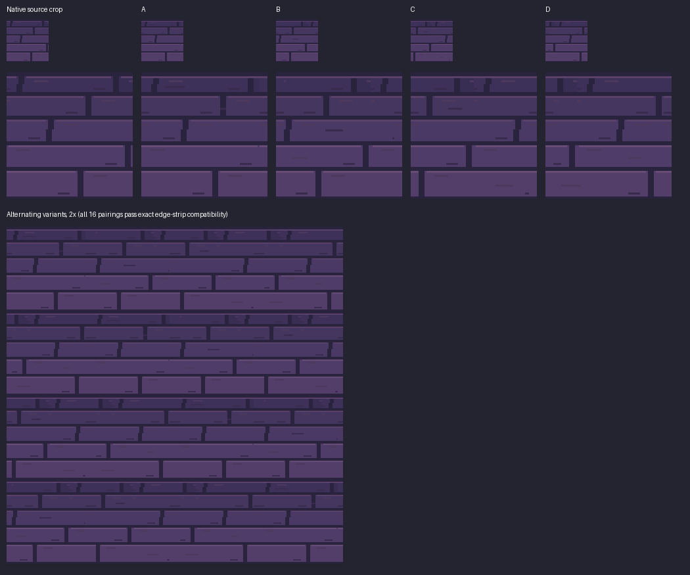
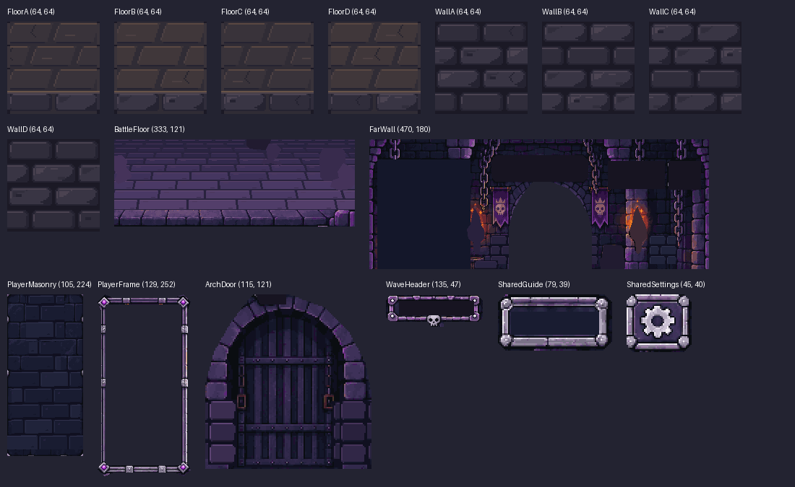

129 native modules · editable LibreSprite sources · isolated Unity preview · awaiting your review.
Left: supplied composition reference, including its original characters and gems. Right: actual Unity art-only scene, assembled from separate modules. Labels are editable preview typography; no combat or game state is running. Fit-to-column changes display size only. Use 1× to inspect the captured pixels.
Four variants per material; all corresponding horizontal and vertical boundaries compare exactly.






Open the Unity scene at Assets/_Game/Scenes/ArtPreview_DungeonModular.unity in the isolated worktree, or choose Dungeon Matcher → Art Preview → Open Dungeon Modular Scene. Sources and exports are separated under ArtSource/DungeonEnvironment/ModularRebuild.